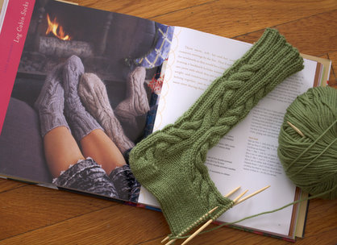

|
||
Premium Patterns Wintry Mix Mitts Love Bytes HawkeyeFree Patterns Kiddie Cadet Summerlin Ruffled Scarf Seamless DS Sock Simply Seamless Pouch Myriads of MushroomsExtras DIY Mitten Blocker Felt Patch Tutorial Yarn Dyeing Tutorial Needle Pouches Knitting Journal |
September 26, 2007 - Posted by Grace SchneblyWhat a Deal! I started a new project the other day. I am making a pair of Log Cabin Socks from Handknit Holidays for my mom. Yes another Christmas present started! I am about three quarters done with the first sock, and it has gone pretty smoothly considering I have never knit a pair of socks before! For some reason I have never really been excited about knitting socks, and this is one of the only sock patterns that has ever appealed to me. These will make the prefect gift for my mom though since their house can get pretty cold in the winter time in Ellensburg, WA. Eventually I want to make myself a pair too! I really love the cable pattern and the fact that they’re knit out of worsted weight yarn. It makes the knitting go rather quickly and it is a bit easier on my hands. I also really like the knee high sock pattern from Handknit Holidays, although I doubt they’d look good on me! If you haven’t checked out this book yet, you definitely should. It is one of the first sources I turn to when I am looking for knit gift ideas! Speaking of good books, Alice found a great deal on Knit 2 Together by Tracy Ullman and Mel Clark on Amazon. I bought the book a while ago, and although I haven’t knit anything from it yet, there are several patterns I want to try! A few of my favorites are the House Slippers, Mel’s Mouse Family, and Doctor’s Bag, and the Lacy Hug-Me-Tight. This book is definitely worth $5.50, and remember if you purchased this book at a higher price within the past 30 days check out Amazon’s Post-Order Price Guarantee to get a refund! I thought I should mention two other books that I am really excited to check out! First is Crazy Aunt Purl’s Drunk, Divorced, and Covered in Cat Hair which features a shawl pattern designed by the talented and lovely Staci at Very Pink. Although I am not drunk or divorced, I am most definitely covered in cat hair (along with everything that I own sadly). Second is Last-Minute Patchwork + Quilted Gifts by Joelle Hoverson, the newest addition to the “Last-Minute” series of craft books. You should definitely give a look at the preview posted at The Purl Bee, because I literally haven’t seen one project from the book that I don’t want to make! I especially love the bird ornaments, Peanut the elephant, and the Puzzle Ball. Anyways if you have seen any books you’re excited for or if you’ve found other great deals on Amazon, please tell us about ‘em! |
   Recent ReviewsRecent Posts
 Our Favorites
|
| © 2007 KathrynIvy.com | ||